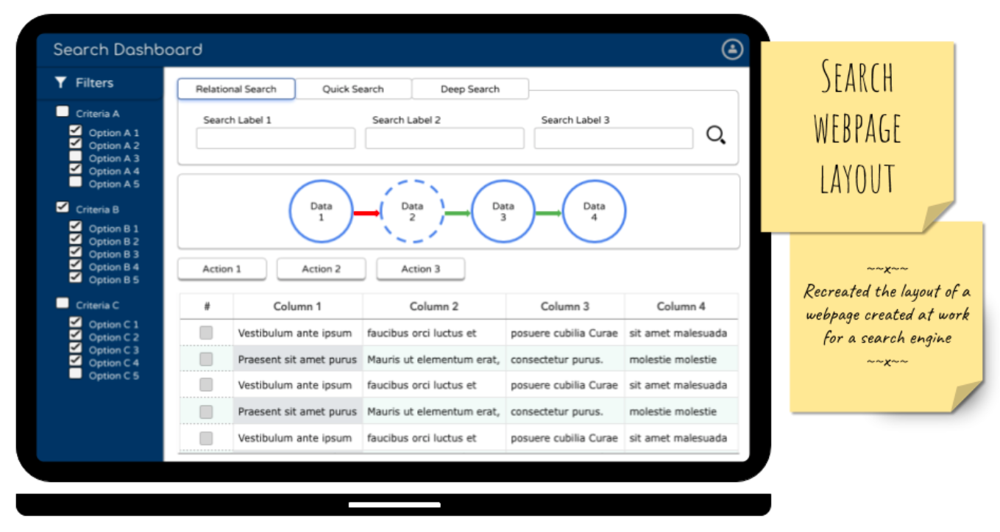

Search Dashboards
What?
This project aimed at creating an application that can provide different ways of searching, creating, updating and deleting an artifact within the firm.
How?
Three types of search methods -- Relational search, Quick Search, Deep Search were built on top of the same dataset to cater to different audiances. The access to certain features were managed by user entiitlement.
When?
June 2015 - May 2016
What I did?